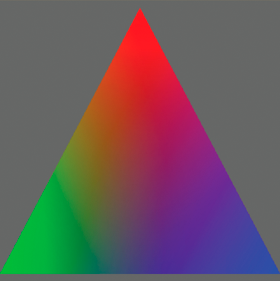

When you use a shader
to create a drawing fill, you use the drawing api methods to create
a vector shape. The shader’s output is used to fill in the shape,
in the same way that any bitmap image can be used as a bitmap fill
with the drawing api. To create a shader fill, at the point in your
code at which you want to start drawing the shape, call the Graphics
object’s
beginShaderFill()
method. Pass the Shader
object as the first argument to the
beginShaderFill()
method,
as shown in this listing:
var canvas:Sprite = new Sprite();
canvas.graphics.beginShaderFill(myShader);
canvas.graphics.drawRect(10, 10, 150, 150);
canvas.graphics.endFill();
// add canvas to the display list to see the result
When you use a shader as a drawing fill, you set any input image
values and parameter values that the shader requires.
The following example demonstrates using a shader as a drawing
fill. In this example, the shader creates a three-point gradient.
This gradient has three colors, each at the point of a triangle,
with a gradient blend between them. In addition, the colors rotate
to create an animated spinning color effect.

Note:
The code for this example was written by Petri Leskinen. Thank
you Petri for sharing this example. You can see more of Petri’s
examples and tutorials at
http://pixelero.wordpress.com/
.
The ActionScript code is in three methods:
-
init()
: The
init()
method
is called when the application loads. In this method the code sets
the initial values for the Point objects representing the points
of the triangle. The also code creates a Sprite instance named
canvas
. Later,
in the
updateShaderFill()
, the code draws the shader
result into
canvas
once per frame. Finally, the
code loads the shader bytecode file.
-
onLoadComplete()
: In the
onLoadComplete()
method
the code creates the Shader object named
shader
.
It also sets the initial parameter values. Finally, the code adds
the
updateShaderFill()
method as a listener for
the
enterFrame
event, meaning that it is called
once per frame to create an animation effect.
-
updateShaderFill()
: The
updateShaderFill()
method
is called once per frame, creating the animation effect. In this
method, the code calculates and sets the shader parameters’ values.
The code then calls the
beginShaderFill()
method
to create a shader fill and calls other drawing api methods to draw
the shader result in a triangle.
The following is the ActionScript code for this example. Use
this class as the main application class for an ActionScript-only
project in Flash Builder, or as the document class for a FLA file
in Flash Professional:
package
{
import flash.display.Shader;
import flash.display.Sprite;
import flash.events.Event;
import flash.geom.Point;
import flash.net.URLLoader;
import flash.net.URLLoaderDataFormat;
import flash.net.URLRequest;
public class ThreePointGradient extends Sprite
{
private var canvas:Sprite;
private var shader:Shader;
private var loader:URLLoader;
private var topMiddle:Point;
private var bottomLeft:Point;
private var bottomRight:Point;
private var colorAngle:Number = 0.0;
private const d120:Number = 120 / 180 * Math.PI; // 120 degrees in radians
public function ThreePointGradient()
{
init();
}
private function init():void
{
canvas = new Sprite();
addChild(canvas);
var size:int = 400;
topMiddle = new Point(size / 2, 10);
bottomLeft = new Point(0, size - 10);
bottomRight = new Point(size, size - 10);
loader = new URLLoader();
loader.dataFormat = URLLoaderDataFormat.BINARY;
loader.addEventListener(Event.COMPLETE, onLoadComplete);
loader.load(new URLRequest("ThreePointGradient.pbj"));
}
private function onLoadComplete(event:Event):void
{
shader = new Shader(loader.data);
shader.data.point1.value = [topMiddle.x, topMiddle.y];
shader.data.point2.value = [bottomLeft.x, bottomLeft.y];
shader.data.point3.value = [bottomRight.x, bottomRight.y];
addEventListener(Event.ENTER_FRAME, updateShaderFill);
}
private function updateShaderFill(event:Event):void
{
colorAngle += .06;
var c1:Number = 1 / 3 + 2 / 3 * Math.cos(colorAngle);
var c2:Number = 1 / 3 + 2 / 3 * Math.cos(colorAngle + d120);
var c3:Number = 1 / 3 + 2 / 3 * Math.cos(colorAngle - d120);
shader.data.color1.value = [c1, c2, c3, 1.0];
shader.data.color2.value = [c3, c1, c2, 1.0];
shader.data.color3.value = [c2, c3, c1, 1.0];
canvas.graphics.clear();
canvas.graphics.beginShaderFill(shader);
canvas.graphics.moveTo(topMiddle.x, topMiddle.y);
canvas.graphics.lineTo(bottomLeft.x, bottomLeft.y);
canvas.graphics.lineTo(bottomRight.x, bottomLeft.y);
canvas.graphics.endFill();
}
}
}
The following is the source code for the ThreePointGradient shader
kernel, used to create the “ThreePointGradient.pbj” Pixel Bender
bytecode file:
<languageVersion : 1.0;>
kernel ThreePointGradient
<
namespace : "Petri Leskinen::Example";
vendor : "Petri Leskinen";
version : 1;
description : "Creates a gradient fill using three specified points and colors.";
>
{
parameter float2 point1 // coordinates of the first point
<
minValue:float2(0, 0);
maxValue:float2(4000, 4000);
defaultValue:float2(0, 0);
>;
parameter float4 color1 // color at the first point, opaque red by default
<
defaultValue:float4(1.0, 0.0, 0.0, 1.0);
>;
parameter float2 point2 // coordinates of the second point
<
minValue:float2(0, 0);
maxValue:float2(4000, 4000);
defaultValue:float2(0, 500);
>;
parameter float4 color2 // color at the second point, opaque green by default
<
defaultValue:float4(0.0, 1.0, 0.0, 1.0);
>;
parameter float2 point3 // coordinates of the third point
<
minValue:float2(0, 0);
maxValue:float2(4000, 4000);
defaultValue:float2(0, 500);
>;
parameter float4 color3 // color at the third point, opaque blue by default
<
defaultValue:float4(0.0, 0.0, 1.0, 1.0);
>;
output pixel4 dst;
void evaluatePixel()
{
float2 d2 = point2 - point1;
float2 d3 = point3 - point1;
// transformation to a new coordinate system
// transforms point 1 to origin, point2 to (1, 0), and point3 to (0, 1)
float2x2 mtrx = float2x2(d3.y, -d2.y, -d3.x, d2.x) / (d2.x * d3.y - d3.x * d2.y);
float2 pNew = mtrx * (outCoord() - point1);
// repeat the edge colors on the outside
pNew.xy = clamp(pNew.xy, 0.0, 1.0); // set the range to 0.0 ... 1.0
// interpolating the output color or alpha value
dst = mix(mix(color1, color2, pNew.x), color3, pNew.y);
}
}
Note:
If you use a shader fill when rendering under the graphics
processing unit (GPU), the filled area will be colored cyan.
For more information about drawing shapes using the drawing api,
see
Using the drawing API
.